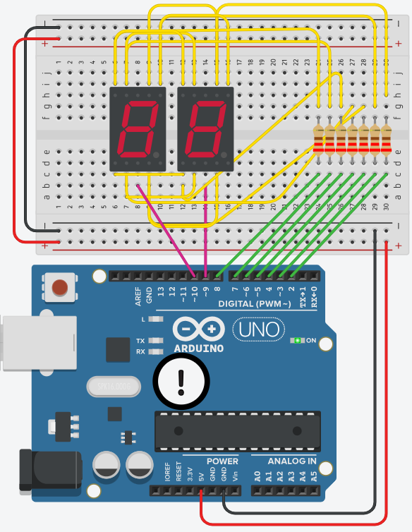
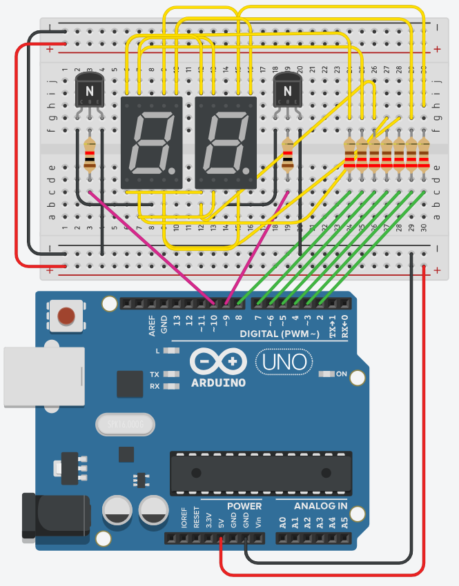

Twee cijfers tonen terwijl je maar zeven pinnen op je Arduino gebruikt? Hoe doe je dat? Simpel: je stuurt de twee displays om beurten aan, en je wisselt zo snel dat je oog het verschil niet ziet.
Een 7-segment display kost je zeven pinnen. Twee displays zouden er dus veertien kosten, en zoveel vrije pinnen heeft een Arduino UNO of Leonardo niet als er ook nog knoppen en leds aan moeten.
Een dubbel display lost dat hardwarematig half op: de zeven segmentaansluitingen van beide displays zitten aan elkaar geknoopt. Segment a van het linkse display en segment a van het rechtse hangen aan dezelfde pin. Alleen de gemeenschappelijke pin van elk display is apart uitgebracht.

Dat scheelt pinnen, maar het levert meteen een nieuw probleem op: zet je een patroon op de segmentpinnen, dan krijgen beide displays datzelfde patroon. Je kan dus onmogelijk tegelijk een 4 links en een 7 rechts tonen. Wat je wel kan, is kiezen welk display op dat moment stroom krijgt.
Je toont de twee cijfers dus om beurten:
Doe je dat traag, dan zie je de twee cijfers om beurten flikkeren. Doe je het snel genoeg, dan kan je oog de twee niet meer uit elkaar houden en zie je twee cijfers naast elkaar staan. Dat heet persistentie van het netvlies: je oog blijft een lichtpunt nog een fractie van een seconde zien nadat het al gedoofd is. Vanaf ongeveer 50 wisselingen per seconde per display valt er niets meer te merken.
Een film is een reeks stilstaande beelden die snel genoeg na elkaar komen om als beweging over te komen. Bij multiplexing gebeurt hetzelfde, alleen wissel je tussen twee displays in plaats van tussen beelden.
Elk display heeft zijn eigen pin die bepaalt of het aan de beurt is. In dit geval pin 9 en pin 10. Als we die pin laag zouden zetten dan kan er stroom vloeien van de 7 segmenten naar die ene pin. Dus in het slechtste geval wordt dat 7 x 14.5 mA = 101.5 mA. Dat is meer dan een pin kan sinken. Daarom wordt er een transistor gebruikt. De pin stuurt de basis van een transistor zodat deze werkt als een schakelaar. Zet je de pin op hoog dan kan er stroom vloeien van de segmenten naar de massa. Hoe je die transistor dimensioneert, staat ook uitgelegd op de pagina Vermogen schakelen.

Het programma hieronder toont het principe met twee segmenten in plaats van met twee cijfers: segment a op het linkse display en segment b op het rechtse. Twee segmenten die nooit tegelijk aan staan, en die je toch allebei ziet branden.
const int segA = 2; // segment a van allebei de displays
const int segB = 3; // segment b van allebei de displays
const int linkerDisplayPin = 9; // naar de basis van de linkse transistor
const int rechterDisplayPin = 10;
void setup()
{
pinMode(segA, OUTPUT);
pinMode(segB, OUTPUT);
pinMode(linkerDisplayPin, OUTPUT);
pinMode(rechterDisplayPin, OUTPUT);
}
void loop()
{
// Alleen segment a aan, en alleen het linkse display actief
digitalWrite(segA, HIGH);
digitalWrite(segB, LOW);
digitalWrite(rechterDisplayPin, LOW);
digitalWrite(linkerDisplayPin, HIGH);
delay(10);
// Alleen segment b aan, en alleen het rechtse display actief
digitalWrite(segA, LOW);
digitalWrite(segB, HIGH);
digitalWrite(linkerDisplayPin, LOW);
digitalWrite(rechterDisplayPin, HIGH);
delay(10);
}Met twee keer 10 ms duurt één volledige wissel 20 ms, dus elk display komt vijftig keer per seconde aan de beurt. Dat is genoeg om de twee samen te zien. Zet die twee delay(10) eens op 500, dan zie je de segmenten om de beurt aangaan.
Een heel cijfer werkt precies hetzelfde. In plaats van twee digitalWrite-regels zet je dan een hele rij uit de cijferpatronen op de zeven segmentpinnen, en pas daarna activeer je het display waar dat patroon bij hoort.
Elk display staat maar de helft van de tijd aan, dus het brandt minder fel dan wanneer je het rechtstreeks zou aansturen. Bij twee displays valt dat nauwelijks op. Ga je later multiplexen over vier of acht displays, dan wordt het wel merkbaar.